Environments engineered to help people
solve complex industrial challenges.
Officebanao — the design & build partner behind this proposal.
About us
15+ years of experience; 100+ satisfied customers & 20 million sq.ft of office space delivered.
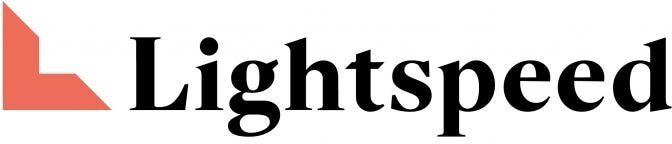
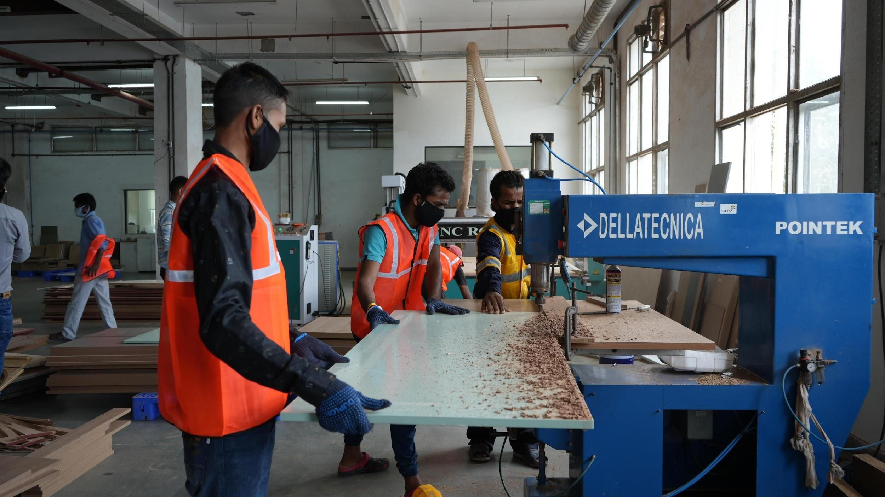
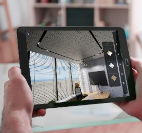
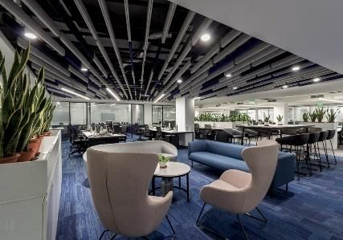
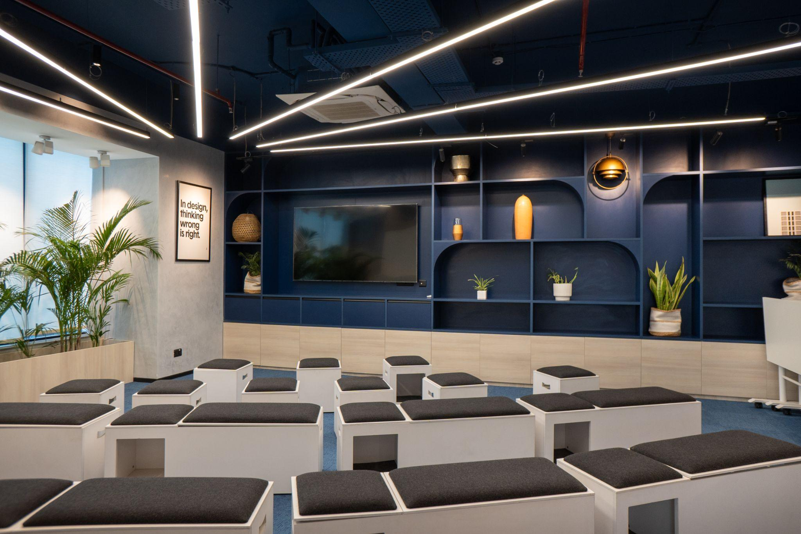
Vision
To revolutionise office creation and management with technology.
Mission
Transforming office interiors by uniting designers, architects, suppliers, and contractors on a tech platform, and empowering them with tools and support to redefine the office experience for clients.
They trust us
The Who
Sidvin Outotec Engineering is a multidisciplinary engineering partner that delivers end-to-end solutions for industrial and process sectors worldwide. Through expertise in plant engineering, product development, project execution, and digital solutions, they transform complex engineering challenges into efficient, sustainable outcomes.
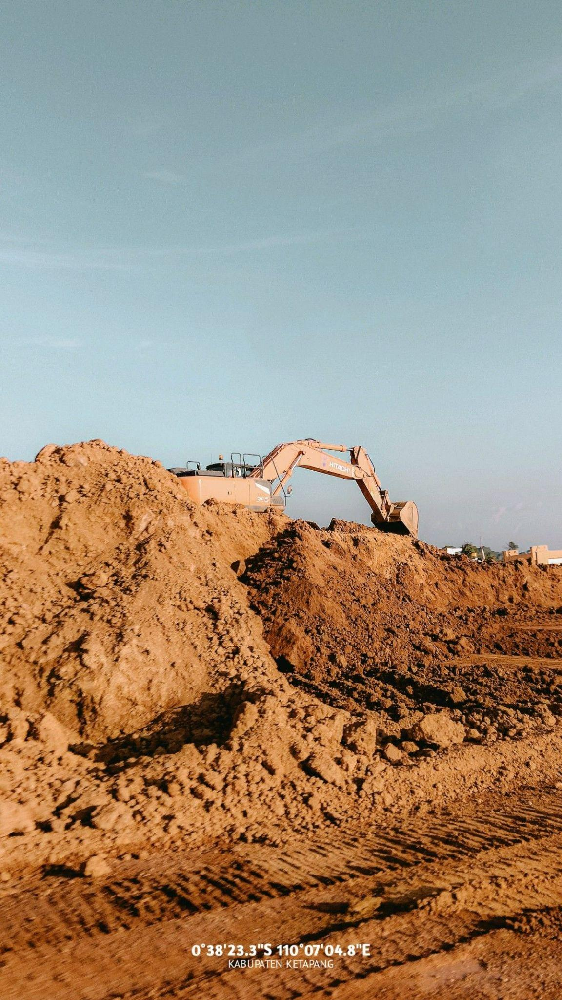
Where Trust Connects, People Lead &
Adaptability Drives Progress.
The User
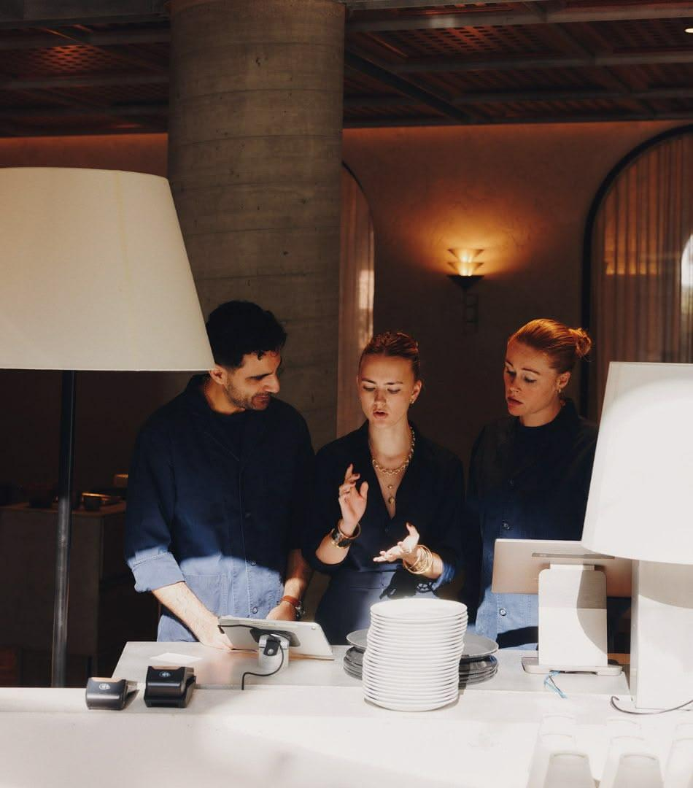
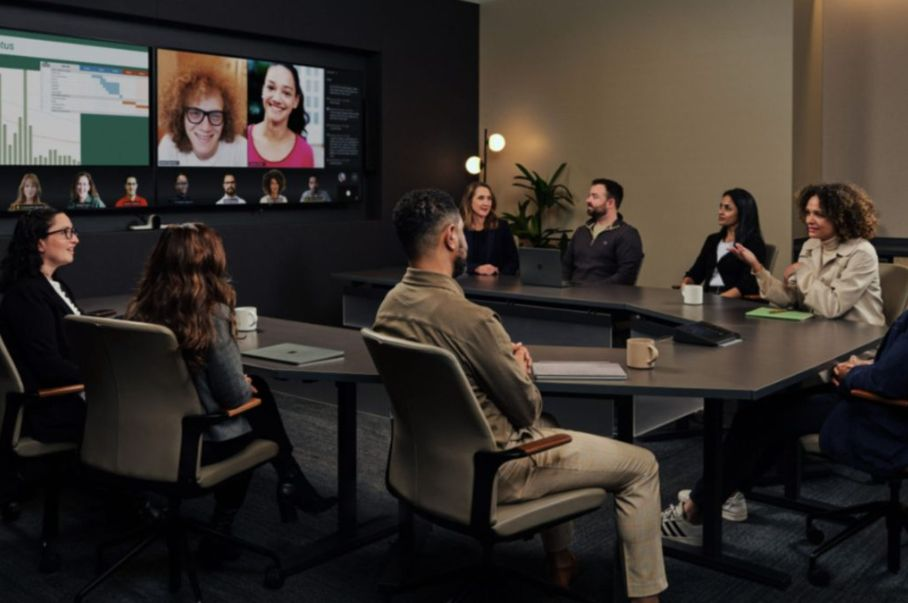
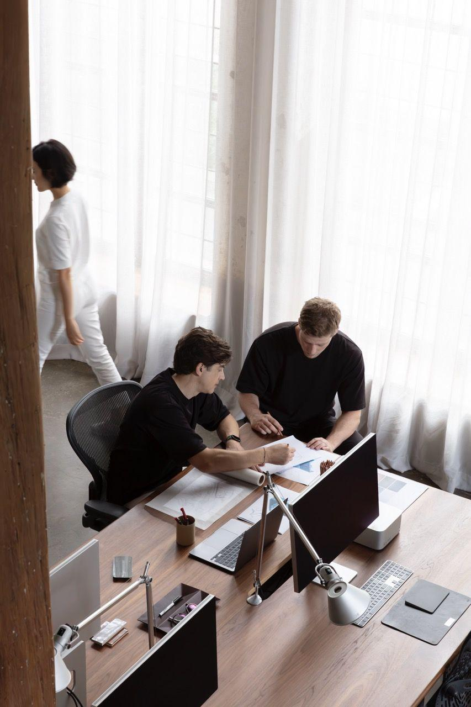
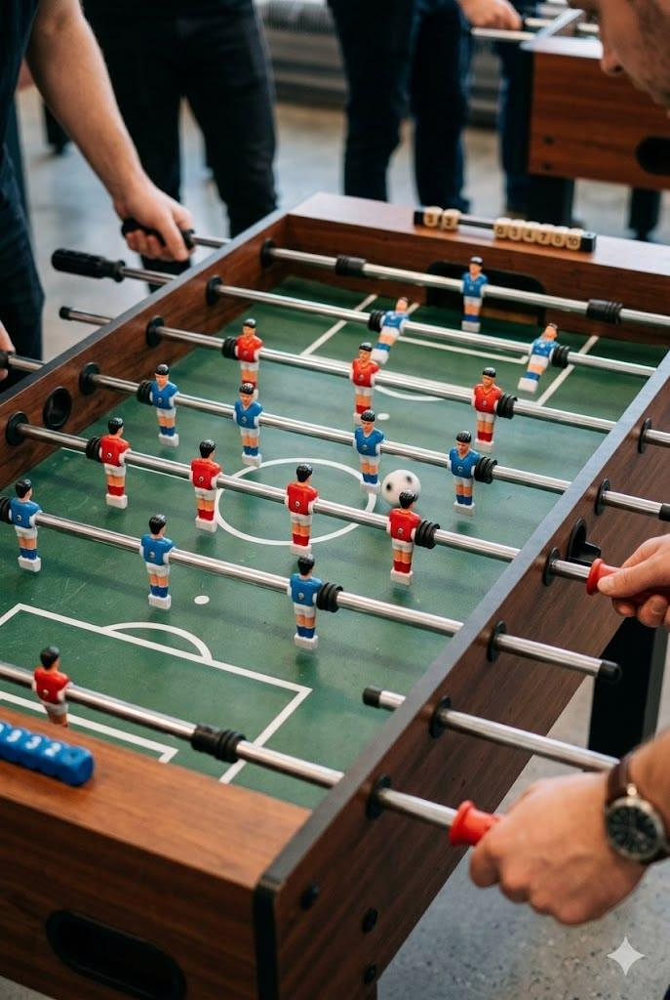
…to create a workplace of quiet confidence, trusted collaboration, and agile innovation.
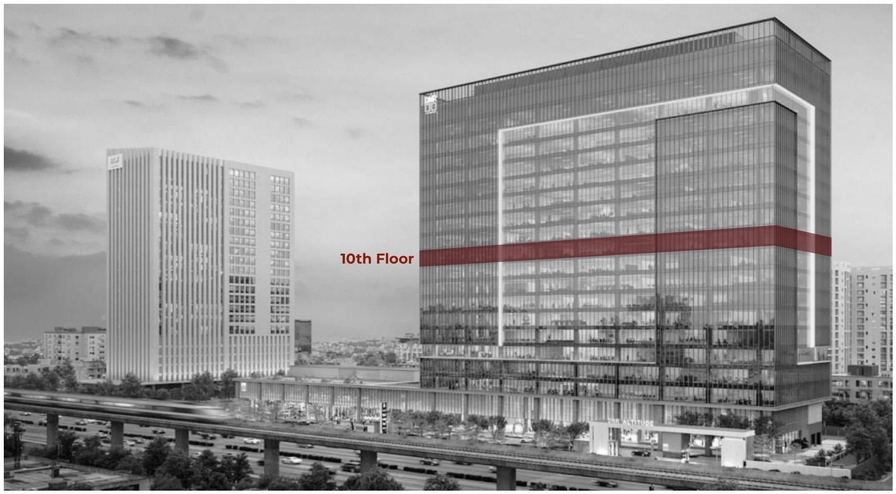
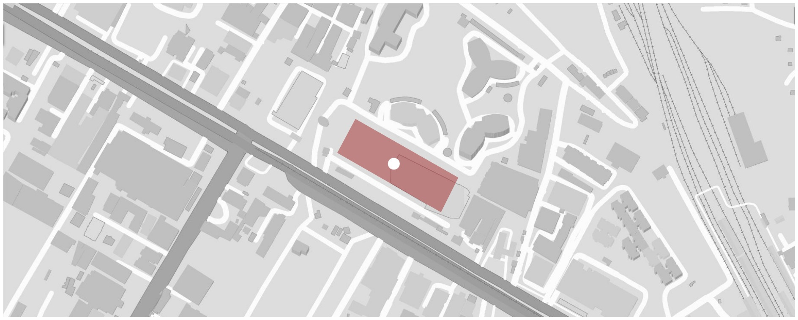
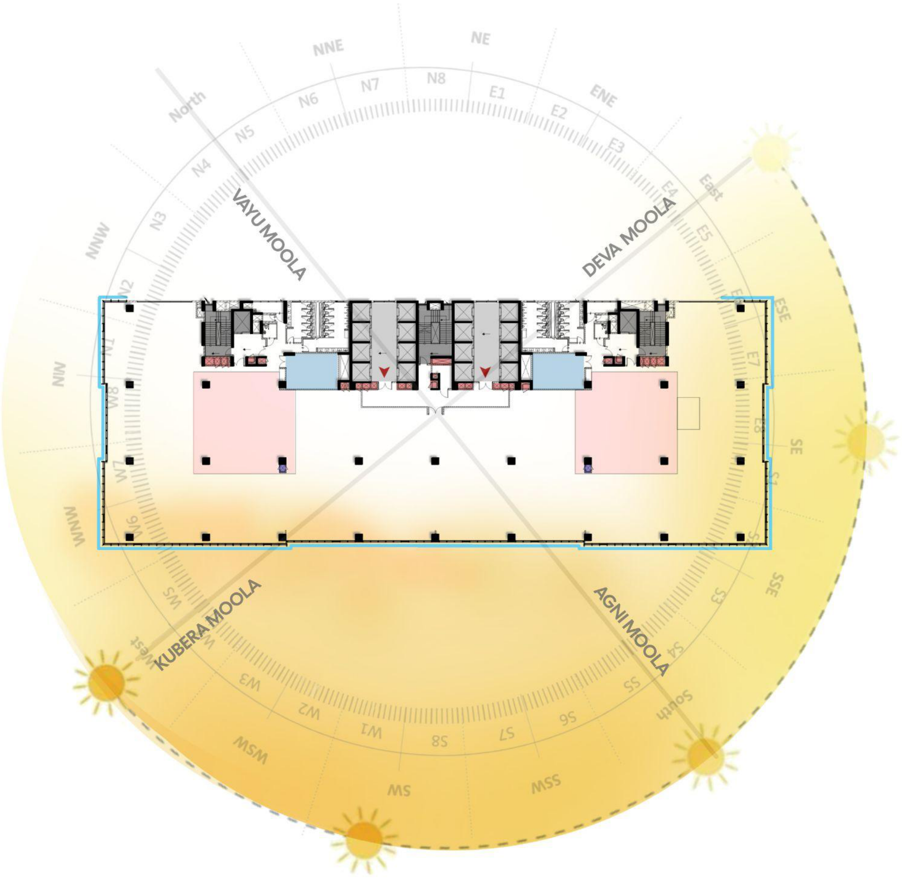
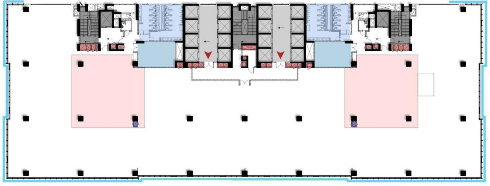
| S.No | Total | Req. as per NBC | As per proposed layout | |||
|---|---|---|---|---|---|---|
| M | F | M | F | |||
| 1 | No. of Staff | 300 | - | - | 180 | 120 |
| 60% | 40% | 60% | 40% | |||
| 2 | WC | 08 | 08 | 10 | 10 | |
| 3 | Washbasins | 08 | 05 | 10 | 9 | |
| 4 | Urinals | 07 | N/A | 10 | N/A | |
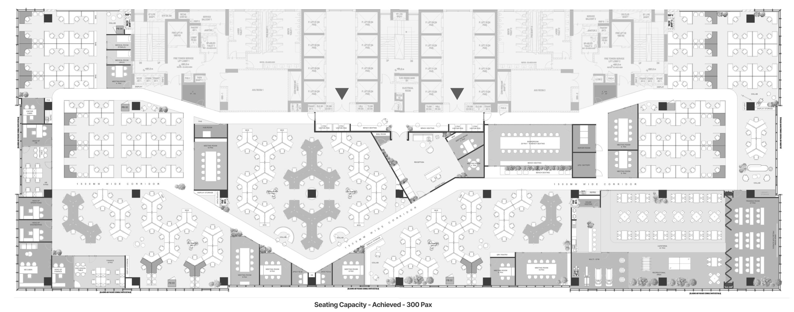
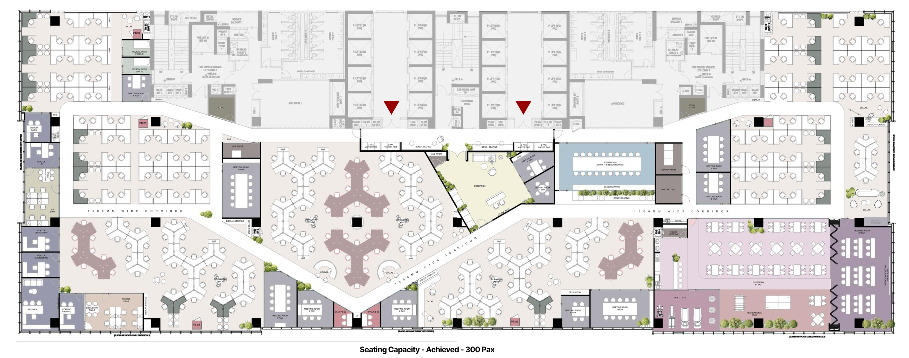

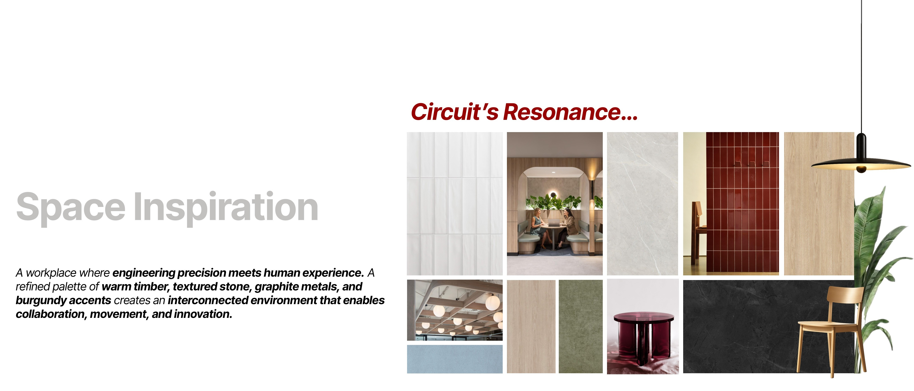
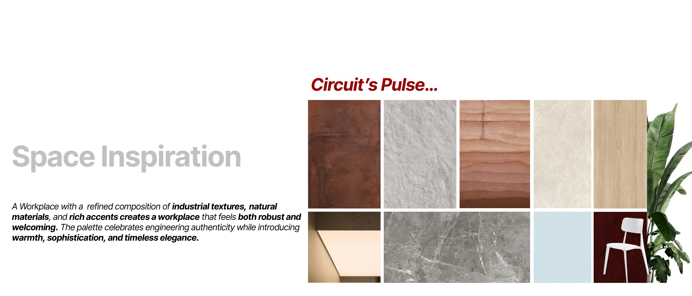